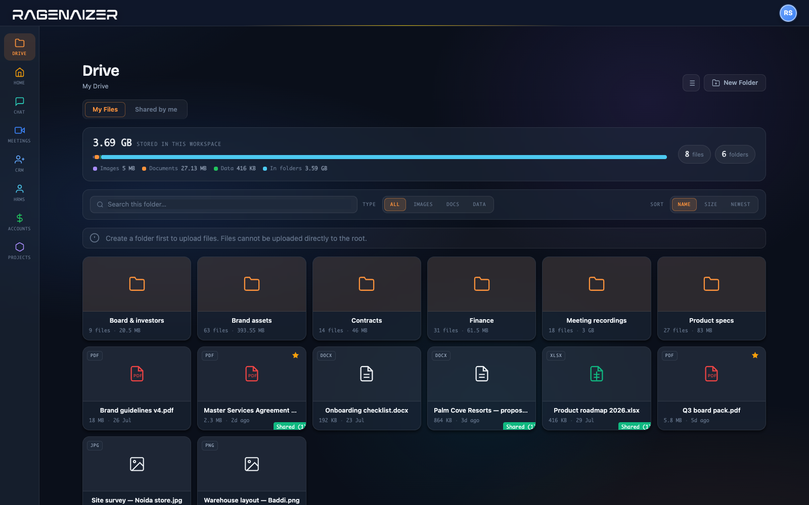

A share link here carries a password, an expiry, a download ceiling that counts down, and a revoke button that actually works. Everything a file did — uploaded, viewed, downloaded, shared, deleted — is written down.
What a link out of here can be told to do
Storage broken down by what is actually taking it up, folders with their own counts, and a badge on every file that is currently shared with somebody outside.

The parts that matter when the files are contracts and board packs rather than holiday photos.
Yes. Revoking removes the share, and the next person to click it gets nothing. You can also change a live link — tighten it to view-only, add an expiry, lower the download cap — without sending a new one.
Yes, and the password is stored hashed rather than kept in a readable form. Forwarding the link on its own does not open the file.
Uploads over a certain size go up in chunks. A session can be checked on, resumed, or abandoned — so losing your connection at 80% costs you the last chunk rather than the whole file.
Yes. Uploads, views, downloads, shares and deletions are recorded against the file and the person, and download counts sit on the share itself against the limit you set.
View, download, or edit — chosen when you create it. Combined with a password, an expiry and a download ceiling, that is four independent dials on one link rather than "public" and "private".
Yes, automatically. A recorded meeting is uploaded into Drive when it finishes, which is why the platform can promise the recording stays in your workspace.
No. Drive is one of the apps in the seat block, and it is where the other apps put things — chat attachments, meeting recordings, documents from the rest of the platform.
Share with a password, an expiry and a limit — and revoke it the day the deal falls through.
This is one module of the business OS, not a point tool. The same seat opens Meetings, Mail, Chat, Drive, CRM, HR, Accounts, Projects, Procurement, Learning and Research — eleven modules covering about twenty-eight products' worth, on one login, one permission model and one ledger. You are not buying a file store; you are putting the company on one system.